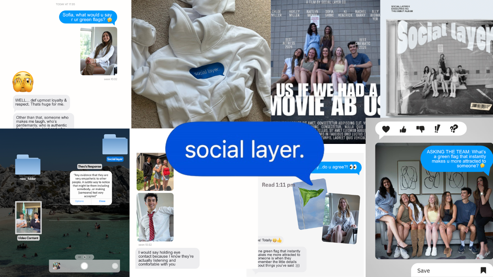
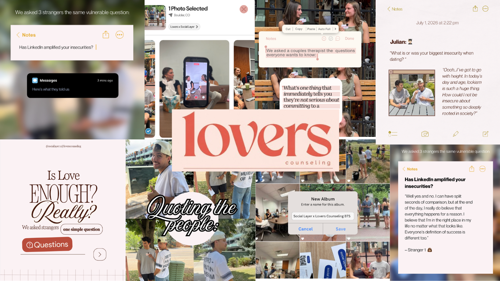
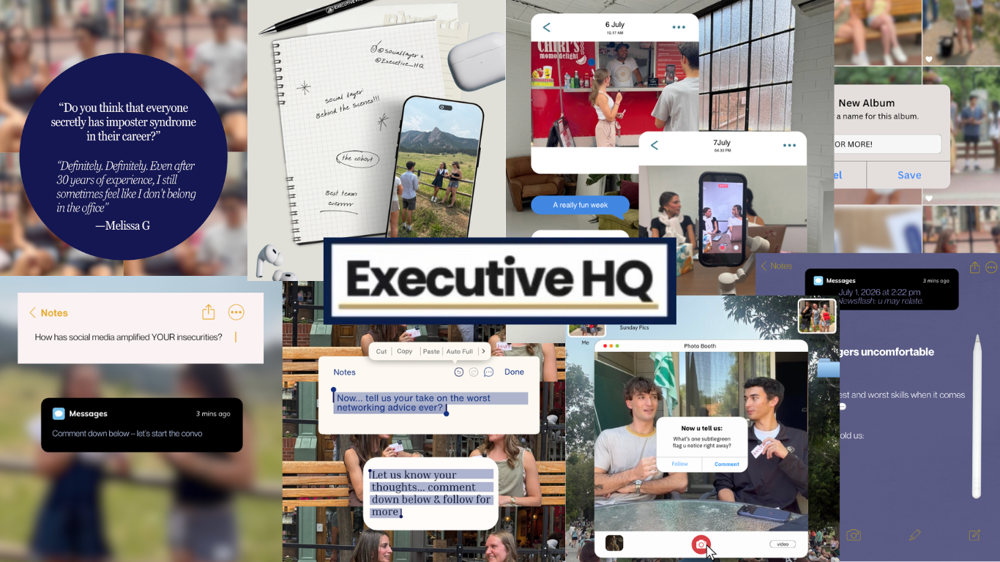
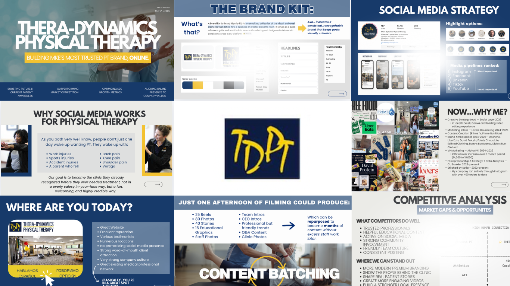

social layer.
Leading creative strategy and social media content across multiple brands by developing campaign concepts, planning content, interviewing talent, and collaborating with editors to create engaging digital storytelling. Spear-heading efforts to make social media a more positive, healthy, and unfiltered experience.


lovers counseling
Leading a team as Creative Strategy Lead, I helped transform meaningful mental health conversations into engaging social media through strategic storytelling, educational content, interviews, and brand messaging that made therapy feel more approachable, authentic, and accessible.
executive HQ
Developed founder-focused content strategies that strengthened Executive HQ's personal brand through educational storytelling, interviews, thought leadership, and community-driven social media campaigns. Leading a team of four as the Creative Strategy Lead.


thera-dynamics
Developed a comprehensive social media growth strategy for Thera-Dynamics Physical Therapy, including market research, brand positioning, visual identity, content systems, and platform planning. Created a long-term roadmap to build community awareness, patient trust, and digital leadership in Milwaukee.
Ambassadorships
Barry's • Moments • UberOne • David Protein • Edikted • Points Chocolate • UberEats